using TidierIteration
using QuartoDocBuilder
quarto_build_site(TidierIteration, repo = "TidierOrg/TidierIteration.jl")From zero to nice docs!
In this tutorial I will explain the steps to build your docs without too much of a headache! I will use my package TidierIteration.jl as an example.
First steps
The docs folder
In your package directory (in my case, Github/TidierIteration), create a docs directory.
Now create a Julia script named make.jl inside docs with the following content:
Changing the environment
I don’t want to make QuartoDocBuilder a dependency on TidierIteration! So I have to change my environment to use this package. To do this is easy: go to the REPL and type
] activate docsThe output is
Activating new project at `~/Documentos/GitHub/TidierIteration.jl/docs`Now you add these two packages as dependencies to the docs environment:
] add ../TidierIteration.jl/and
] add https://github.com/vituri/QuartoDocBuilder.jlNote: here ] denote the pkg mode in the REPL. If you are already in pkg mode, don’t need to type ].
Creating the files
Now we are good to go! Just run the docs/make.jl (line by line in VSCode, for example).
If everything went smoothly (I hope so!), your docs/ folder will looks like this:
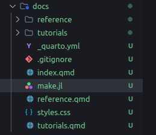
Installing Quarto
All these .qmd files are useless if we don’t have Quarto installed! Go to https://quarto.org/docs/download/ and install. Important: you need to install the latest pre-release version, otherwise you won’t have the julia engine!
If you use VSCode, I strongly suggest that you also install the Quarto extension.
Creating the website
Now is the best part: open docs/index.qmd and press the “preview” button on VSCode
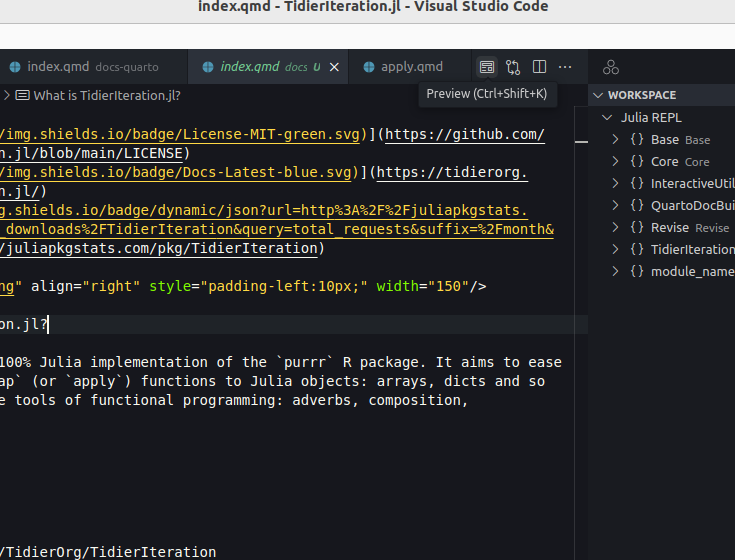
The magic will start to happen and all .qmd files will be rendered into pages:
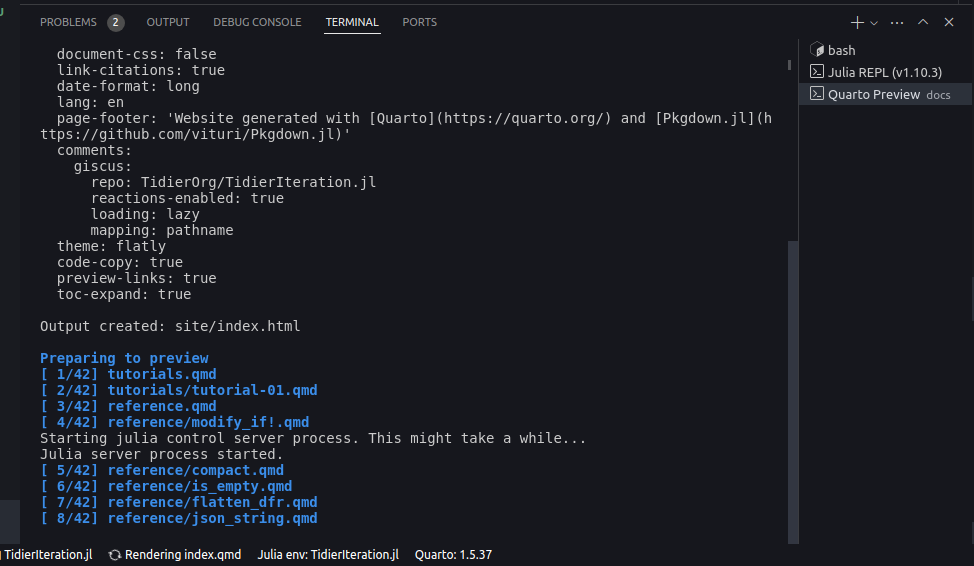
If everything went alright, you will see this interactive viewer:
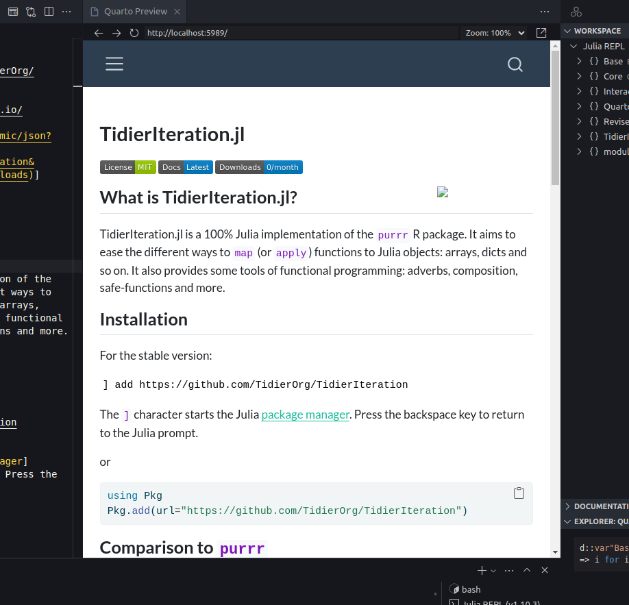
In this case, I needed to copy the assets/ directory to the docs/ folder.
Enabling comment sections (optional)
Comment sections are a great way to see if people are having trouble to understand your docs! By default, QuartoDocBuilder enables the comment section using Discus. You need to give permission to Discus interact with your Discussion section on Github.
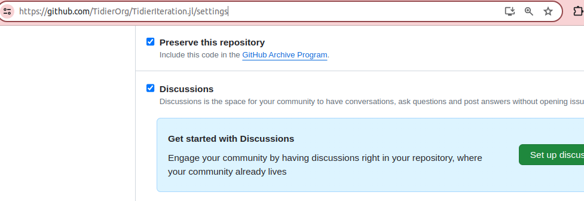
Go to https://github.com/apps/giscus and allow Discus to access your repo:
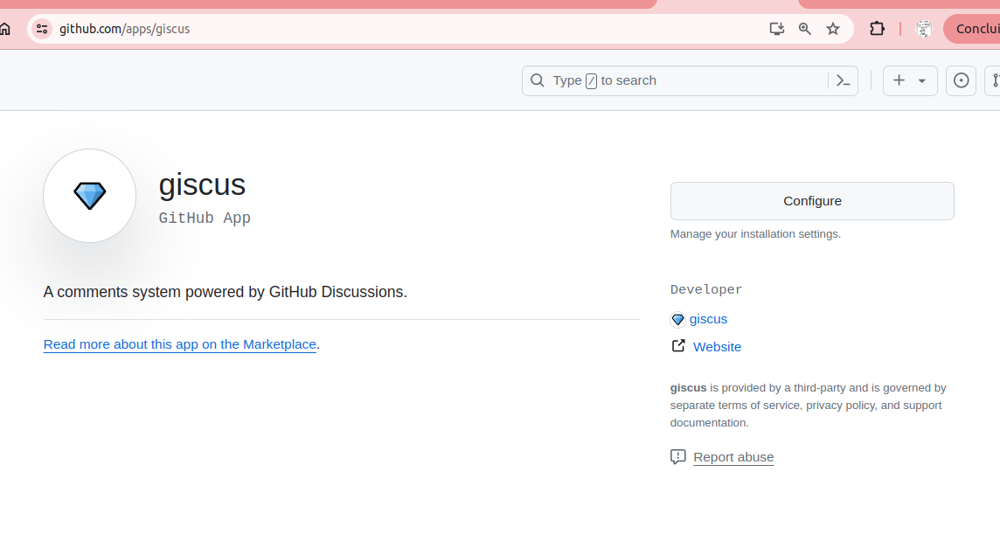
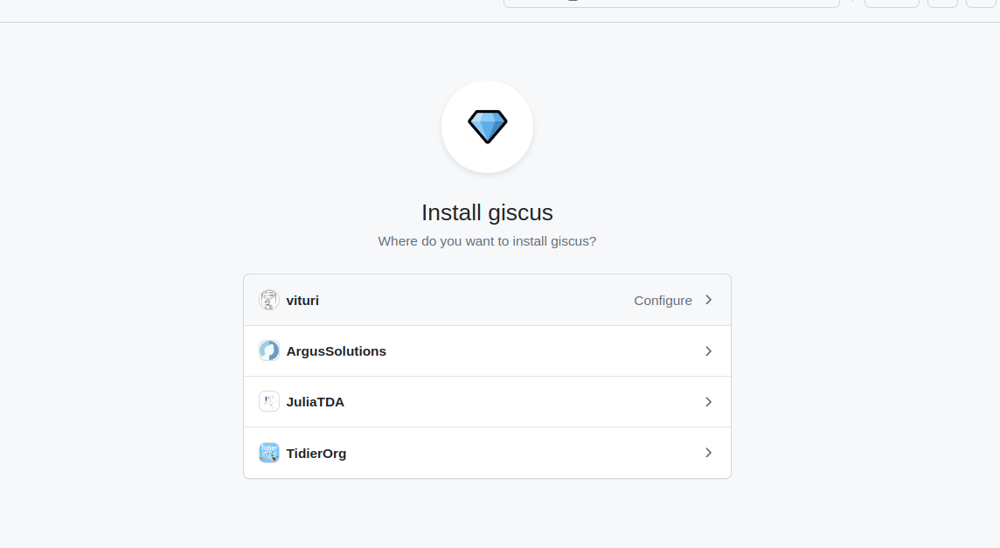
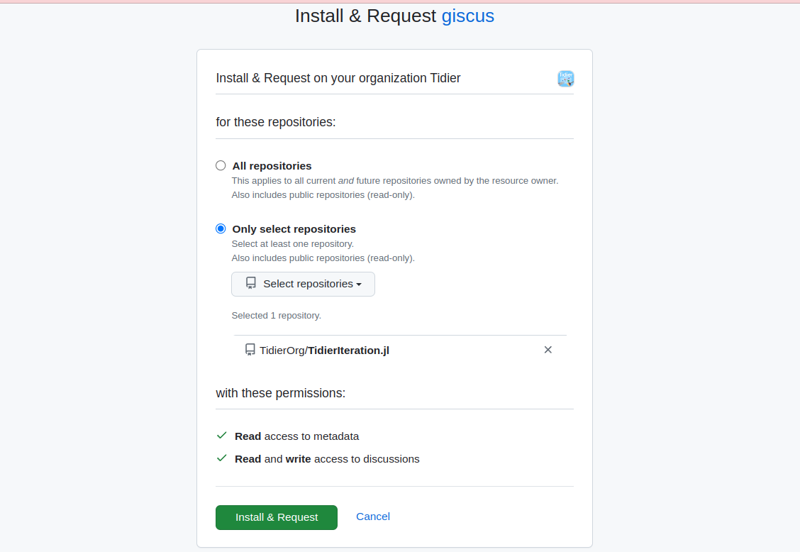
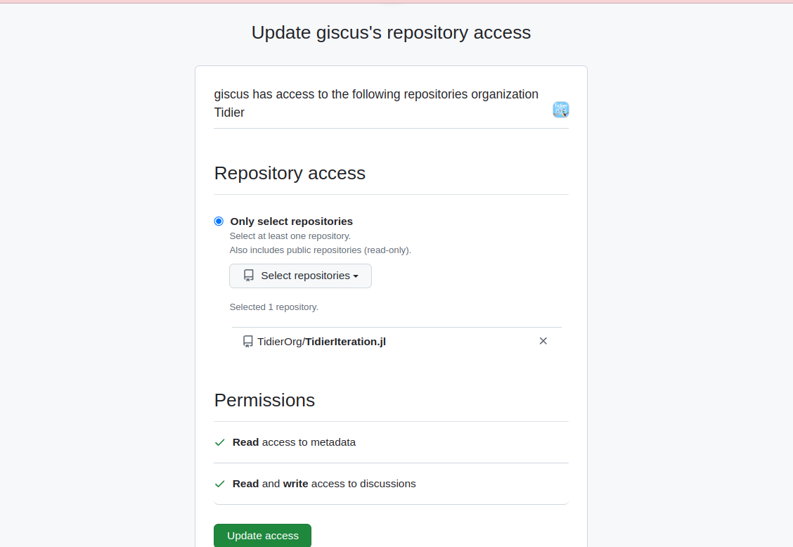
Publishing your website
Now it’s time to shine! Use the bash and go to your docs/ folder. Simply run the following command:
quarto publish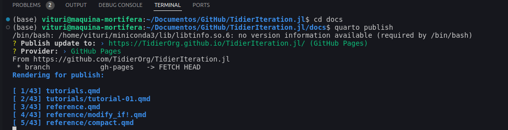
Choose Github Pages and you are good to go!
Setting your default Github Pages
Check if your Github Pages is set to use the branch gh-pages and the folder “/” (root).
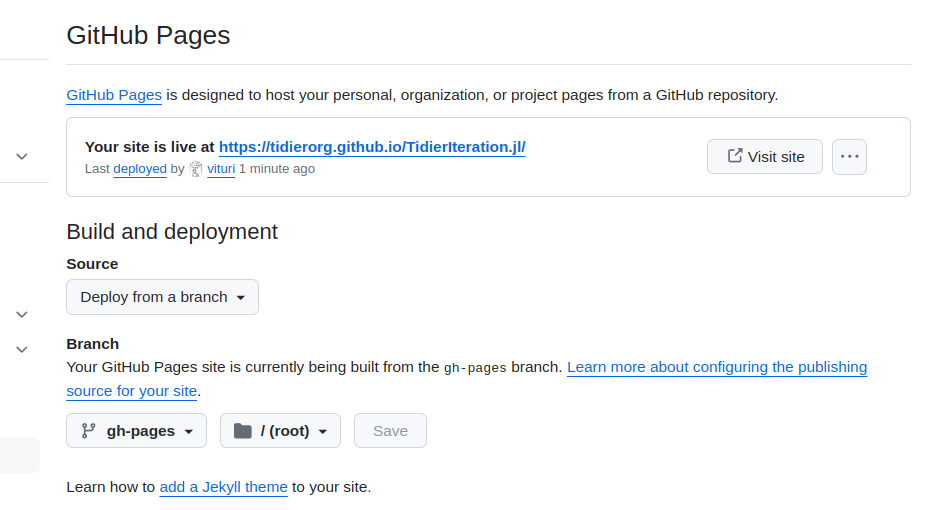
Ready to go!
After all this trouble, your Quarto website is online! You will see something like this:
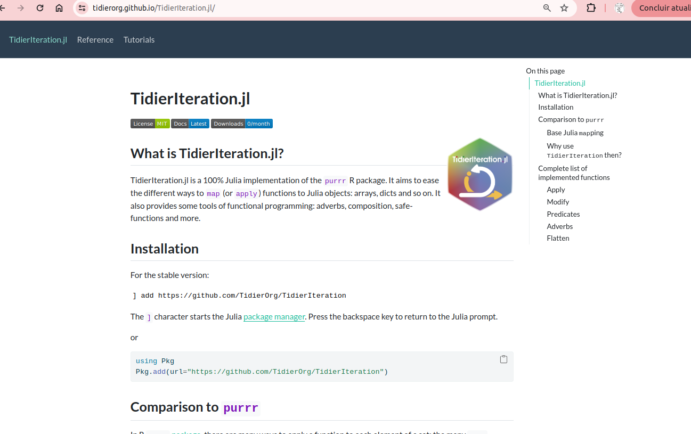
Next steps
What now? How can I make my docs even better, add tutorials and examples? This is the content of the next tutorial…